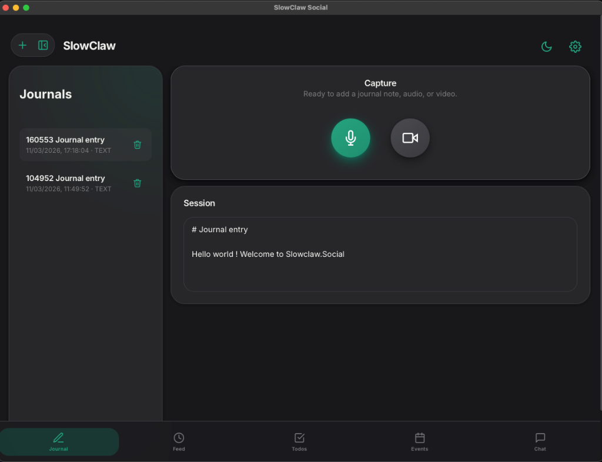
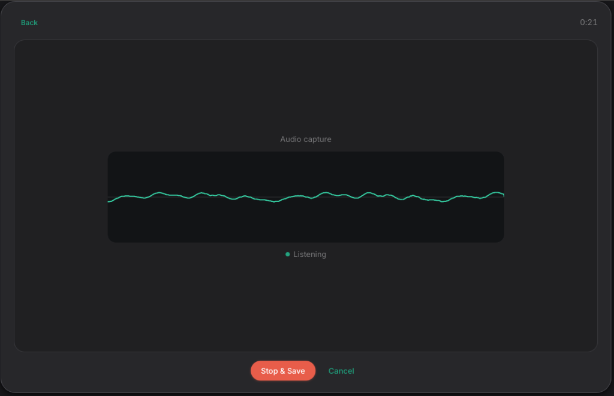
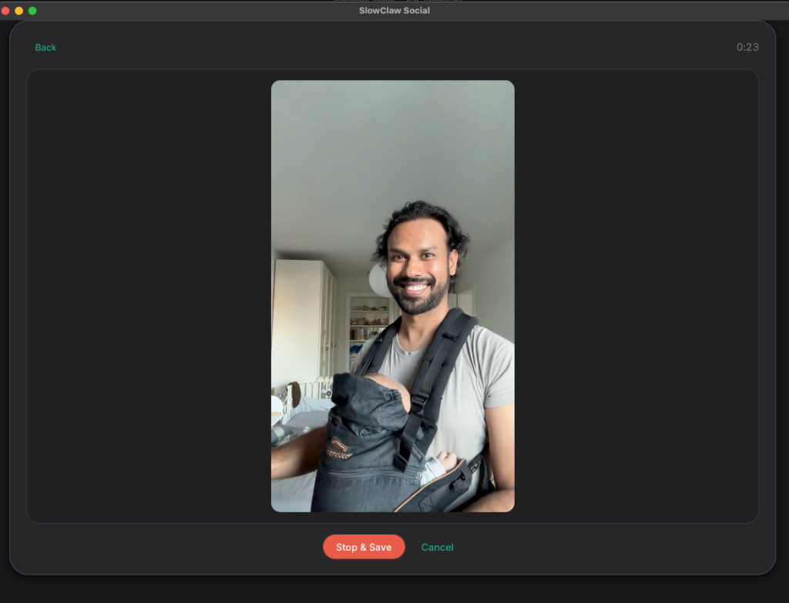

Digital Meditation
The act of journaling is the foundation of personal clarity. Whether it's a voice note or a text entry, recording your daily experiences helps you introspect and cultivate wisdom in a quiet, distraction-free space.
Digital Meditation. Local AI. Hyper-Personalization.
slowclaw.social is a privacy-first, local AI journaling platform. Record audio, video, and text in a minimal space designed for reflection. Gain personal clarity, cultivate wisdom, and reclaim your digital life through local intelligence that never leaves your machine.
$ slowclaw gateway
[SYSTEM] Local workspace ready
[JOURNALS] Reading text, audio, and transcript sidecars
[OUTPUT] Writing posts, clip plans, todos, and events
[FEED] Updating interest sources from kept artifacts
Artifact-first synthesis active...
Phase 01: Capture

The act of journaling is the foundation of personal clarity. Whether it's a voice note or a text entry, recording your daily experiences helps you introspect and cultivate wisdom in a quiet, distraction-free space.

Your most personal data stays on your machine. SlowClaw is built to run on completely offline, local AI models. Transcribe, summarize, and extract insights without ever sending a byte to external providers.
Phase 02: Intelligence & Expansion
Transform raw reflections into durable outputs using local models. Expand capabilities through a community-driven Skill Hub.
Turn journals into short posts, blog drafts, article drafts, ebook seeds, private essays, and transcript-aware clip plans. Edit them if you want. Keep them if they matter. Publish only what represents you.
Expansion packs allow the community to build and share scripts that summarize, mix, or modify your content in entirely new ways. The platform is designed to be open and expandable by everyday builders.
Phase 03: Curation & Connection
SlowClaw vectorizes your private notes to create mathematical representations of your philosophy and interests. This ensures your feed reflects your values, not just clicks.
Bring in sources like Bluesky and Nostr, then rank them against your private artifact history and journal-derived interests instead of raw engagement farming.
By matching personalized vectors, SlowClaw bypasses algorithms to suggest connections with like-minded individuals, fostering meaningful conversations beyond small group silos.
Interface Preview



The Ultimate Vision
More than a tool, SlowClaw is a catalyst for an internet that empowers everyday builders and creators through alignment and wisdom.
Phase 04: Get Started
Required: Rust toolchain (rustc, cargo)
Optional: Node.js 18+ if you need to rebuild web assets
cargo build --releaseBinary path: ./target/release/slowclaw
./target/release/slowclaw gatewayOr for scheduling + automation:
./target/release/slowclaw daemonSlowClaw is not trying to be generic AI slop generation. The product loop is: